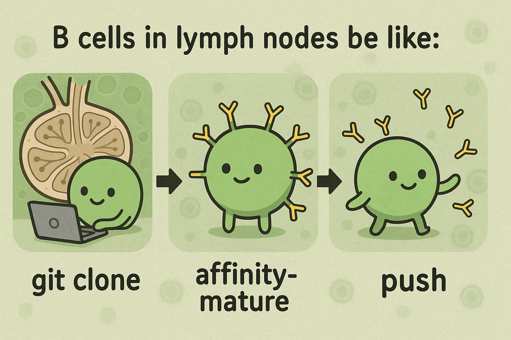

5 Integrated Platforms, Tools, and Technologies
5.1 Version Control: Git & GitHub

5.1.1 What is Version Control?
Imagine you’re writing a research paper. You make changes, save different versions, and sometimes want to go back to previous versions. Version control is like having a time machine for your files - it helps you track changes, collaborate with others, and maintain a history of your work.
5.1.2 Git: Your Personal Time Machine
Git is like a super-powered save system. Instead of saving files with names like “paper_v1.docx”, “paper_v2.docx”, Git keeps track of all changes automatically.
5.1.2.1 Basic Git Concepts (with Analogies)
- Repository (Repo)
- Think of it as a project folder that Git watches
- Like a photo album that keeps track of all your project’s versions
- Commit
- Like taking a snapshot of your work
- Each commit is a saved point you can return to
- Like saving a checkpoint in a video game
- Branch
- Like creating a parallel universe for your work
- You can experiment without affecting the main project
- Like writing a draft of your paper without changing the original
- Merge
- Combining changes from different branches
- Like combining notes from different team members into one document
5.1.3 Essential Git Commands

# Start a new project (create a new repository)
git init
# Check the status of your files
git status
# Add files to be saved (staging)
git add filename.txt # Add specific file
git add . # Add all files
# Save your changes (commit)
git commit -m "Description of changes"
# See your project history
git log
# Create and switch to a new branch
git checkout -b new-branch-name
# Switch between branches
git checkout branch-name
# Get updates from remote repository
git pull
# Send your changes to remote repository
git push5.1.4 GitHub: Your Project’s Home on the Internet

GitHub is like a social network for your code. It’s where you can: - Store your projects online - Collaborate with others - Share your work with the world
5.1.4.1 Key GitHub Features
- Repository Hosting
- Like a cloud storage specifically for code
- Access your projects from anywhere
- Issue Tracking
- Like a to-do list for your project
- Track bugs and feature requests
- Pull Requests
- Like suggesting changes to someone else’s work
- Request to merge your changes into their project
- Code Review
- Like peer review for your code
- Get feedback before changes are merged
5.1.5 Common GitHub Workflow
Fork a Repository
- Like making a copy of someone else’s project
- You can modify it without affecting the original
Clone a Repository
git clone https://github.com/username/repository.git- Like downloading a project to your computer
Push Changes
git push origin main- Like uploading your changes to GitHub
5.1.6 Best Practices
- Write Clear Commit Messages
- Like writing good notes
- Helps others (and yourself) understand changes
- Create Feature Branches
- Like working on a separate draft
- Keeps your main work clean
- Regular Updates
- Like syncing your phone
- Keep your local copy up to date
- Review Before Committing
- Like proofreading before submitting
- Check your changes before saving
5.1.7 Common Scenarios
Starting a New Project
git init git add . git commit -m "Initial commit"Updating Your Work
git pull # Make changes git add . git commit -m "Description of changes" git pushCollaborating with Others
git pull # Resolve any conflicts git add . git commit -m "Resolved conflicts" git push
5.1.8 Tips for Beginners
- Start Small
- Begin with basic commands
- Practice with simple projects
- Use Visual Tools
- GitHub Desktop
- GitKraken
- VS Code’s Git integration
- Learn from Mistakes
- Git keeps history
- You can always go back
- Ask for Help
- GitHub has great documentation
- Many online communities can help
Remember: Git and GitHub are tools that get easier with practice. Don’t worry if it seems complex at first - even experienced developers use only a small subset of commands regularly.